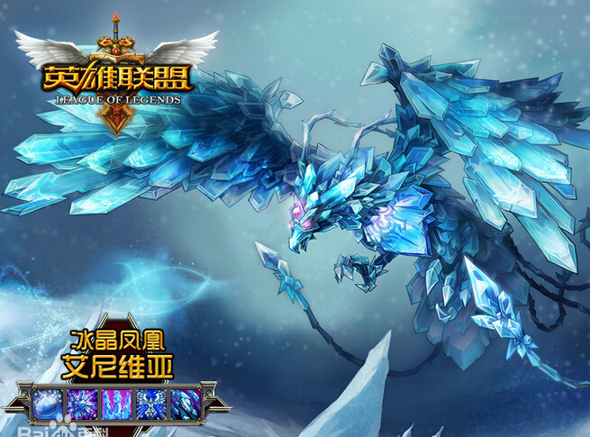
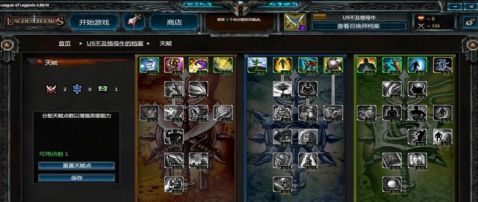

1、好友系统
在游戏平台界面的左下角，可查看到好友列表的缩小图标，图标中可看到当前好友在线人数；点击后则会弹出自己的好友列表界面。
①空闲状态：代表召唤师处于空闲状态；游戏好友列表中，处于空闲的召唤师名或者好友名后方显示的绿色按钮。
②忙碌状态：代表召唤师处于游戏、匹配或队伍等待列表中；游戏好友列表中，处于繁忙状态的召唤师名或者好友名后方显示的黄色按钮。
2、聊天系统
在好友列表中，点击好友后，会弹出对话框可与好友进行聊天，在游戏平台下方可弹出多个聊天框，与不同的召唤师进行聊天互动。
3、比赛中各项聊天指令
《英雄联盟》英雄列表
《英雄联盟》英雄列表(9张)
各项聊天指令需要在先激活聊天框后，才能进行各项指令输入，激活游戏内聊天框指令为：Enter发送聊天信息（默认：只发送给队友）。
|
游戏系统
匹配系统
冰晶凤凰
冰晶凤凰
《英雄联盟》借鉴了暴雪的竞技战网，拥有自动匹配的战网。根据玩家隐藏的实力值“ELO积分”，确认玩家的游戏水平，自动寻找水平相近的对手开局战斗。如果玩家开黑，系统会优先自动匹配到水平相近的黑店对战。
除了自动匹配系统，达到一定水准之后，将开放Ranked积分赛模式，具有竞技水准的征召模式，全网天梯排名。
天赋系统
天赋界面
天赋界面
LOL的召唤师拥有天赋系统，在召唤者信息面板中点击天赋就可以看到3系天赋树。每系的终极天赋均为21点，召唤师等级每提升1级，就可以多获得一点天赋点，用以自由学习天赋，最多为30点，召唤师的天赋并非是固定的，根据你选择控制的英雄不同，你需要修改天赋以适应召唤师的需要，点击界面右下方的“重置天赋点”可以进行洗点。
天赋技能分为三类：攻击类、防御类、通用类，天赋技能点总共为30点。
攻击类：提高物理、法术攻击强化偏重攻击的召唤师技能。
防御类：提高物理、法术防御及抗打击回复能力，强化偏重防御和回复的召唤师技能。
通用类：提高召唤师其他能力，强化多用途召唤师技能，减少技能冷却时间。
|  |
咱们一起来看看观察者模式都有些什么功能吧。(注：观察者模式比正常进行游戏的玩家延迟3分钟，所以不会有泄漏对局信息的危险。观察者在观看过程中可以随时退出游戏，系统不会惩罚该行为。）
观看好友比赛
当你发现名字旁边有个“眼睛”的图标时，说明你可以观看他此时正在进行的比赛。
在好友列表右击好友的名字，在下拉菜单中选择“观察者模式”，就可以观看该好友正在进行比赛。
导播镜头
只要选择了这种模式，镜头会自动跟着比赛节奏走，你不需要做任何操作。
镜头会给你展示精彩的团战或者一些重要时刻，无缝跳转。
导播镜头会优先播放一些玩家感兴趣的时刻，如英雄击杀。
当几个英雄都同时出现在一个屏幕上时，镜头会自动调整，把所有的英雄都纳入到镜头范围内。 |
|